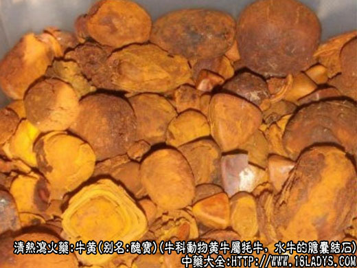

牛黄为常用中药，《神农本草经》列为上品。现商品分为天然牛黄与人工合成牛黄两类。
别名：丑宝。
来源：天然牛黄，为偶蹄目牛科动物黄牛的牦牛，水牛等牲畜的胆囊结石（少数为肝胆管中的胆道结石）。
产地：牛在国内外均有饲养，但所产牛黄的质量，有所不同。商品中又分为国产牛黄和进口牛黄两类。
1、国产牛黄（京牛黄）：全国各地屠宰场均有生产。
2、进口牛黄。
（1）金山黄：主产于加拿大、芝加哥、阿根廷、乌拉圭等地。
（2）印度黄：主产于印度。
采收加工：全年均可收集，杀牛时取出肝脏，割下胆囊如发现胆囊内有块状物，剪开胆、嘴，将胆汁装入纱布或罗内，下放容器收容胆汁。滤出牛黄后，将附着在牛黄上的皮膜剔除干净，立即放在吸潮纸上，稍晾一段时间，至表面收干不显水湿为度。再用吸潮纸多层轻轻包紧，亦可包扎于棉絮或灯心草中，放于干燥处，使其内在水分逐渐蒸发，直至内外全干。切忌直接暴晒，或在炉火上烘烤，以防造成龟裂现象，使牛黄破碎。在发现胆黄之后应继续检查肝胆管道，有没有生成（管黄）如有，应一并取出，包好阴干，同样作牛黄药用。
性状鉴别：
国产牛黄（京牛黄）呈不规则的圆形，三角形，略方形，完整的如豆，如栗，如鸽卵，最大者如鸡鸭卵，不完整的则破裂成片块。表面和内层均为红橙色或棕黄色，深浅不一。表面细腻而略有光泽，个别表面挂有黑色光亮的薄衣，俗称“乌金衣”，有的表皮略粗糙或有龟裂现象。体质松脆，易碎裂。断面呈环形同心层，层层包裹，如树木之年轮，纹理清晰而均匀，偶有白色斑点加杂其中，或偶有白膜状物，附于层层之间。微有清香气，味微苦而回甜，并有清凉感。
京管牛黄：多呈短管状，粗长如小指，管壁厚约1～3毫米，常碎断呈片块。内外均呈棕褐色，深浅不一，较粗糙，有隆起的褐色小疙瘩或龟裂。质亦松脆。断面也显重叠的形成层。但不及胆黄明显，偶有白色斑点及白膜状物，附于管黄之上。气味略与京牛黄相同，但质稍次。
金山牛黄：形状与国产牛黄相似，但色泽不如国产牛黄鲜艳。表面呈棕黄色至焦棕黄色。质地略粗，微有光泽。断面亦略显粗糙，层叠纹理稍厚，亦有白斑，白膜及黑色片块。气味与京牛黄略同，但稍逊于国产。
印度牛黄：形状与国产牛黄相似，唯色泽发呆，呈灰棕黄色或土黄棕色，无光泽或少光泽，麻面或光面。体稍重而较坚结。断面纹理较厚不均，并杂有黑片块及灰白色片。无香凉感并稍带土腥味而苦。
天然牛黄以棕黄色，鲜艳，体轻松酥脆，细腻，气清香，入口有清凉感者为佳。
主要成分：含胆酸、胆红素及其钙盐，又含胆甾醇、麦角甾醇、软脂酸、卵磷脂、维生素D，以及一种分子式相当于C24H11O3N的无色结晶性成分和铜、铁、镁等。
药理作用：开窍化痰、解热镇痉。其原理为：
1、镇静。有效成分为胆酸，能缓和和苯甲酸钠咖啡硷引起大白鼠的惊厥，又能加强巴比妥钠、水合氯醛等对小白鼠的镇静作用。
2、强心。有效成分为胆酸，对心脏有类似洋地黄的作用。
3、造血。能促进家兔红细胞新生，增加红细胞和血红蛋白量。
炮制：生用。
性味：苦，凉。
归经：入心，肝经。
功能：开窍豁痰，息风定惊，清热解毒。
主治：热病神昏，中风痰迷，癫病发狂，惊风抽搐，胎毒，痈肿疔毒，口疮喉肿。
临床应用：
1、用于热性病神昏谵语、烦躁不安，治疗感染性疾病毒血症期有高热和昏迷、惊厥等神经系统症状的患者，取其有镇静和强心作用，也即前人所称的清心、定惊。常配黄芩、黄连、栀子等清热药，方如牛黄清心丸。症更重者再加配犀角、麝香等芳香开窍药，方如安宫牛黄丸。
小儿高热抽搐可用牛黄配朱砂、胆星、金蝎等，方如牛朱七厘散。
2、用于治疗慢性传染肝炎，肝功能差，血清转氨酶值长期不下降者，用牛黄清心丸，每次一丸，每日1～2次，初步观察，对降低转氨酶和改善其它肝功能有一定帮助。
3、用于中风昏迷，痰涎壅盛，以及肺部感染、咳嗽痰多等病症，有明显减少，痰涎分泌和祛痰作用。
附：1、安宫牛黄丸、紫雪丹、至宝丹均用于高热神昏、惊厥抽搐。三药中安宫牛黄丸最凉，紫雪丹次之，至宝丹又次之。安宫牛黄丸多用于感染性疾病热入营分（约相当于毒血症期），痰热亢盛、神识模糊，取其解毒化痰之力较强；紫雪丹多用于实火团结，高热抽搐、神昏烦躁，取其清热镇痉之力较好；至宝丹多用于热痰内闭、中风昏迷、神昏至极，取其辛香开窍之力较胜，必要时三者也可能互相代用。
2、与麝香比较：牛黄开窍作用不及麝香，但清热解毒作用则为其特长，故治热病神昏时，牛黄与麝香常配伍同用。
3、牛黄长于清热解毒，甚优于黄连、黄芩、连翘等，尚可开窍，故也可列入开窍药中。
用量：0.15～0.9g，入丸散剂，不入煎剂。外用适量。
处方举例：1、安宫牛黄丸《温病条辩》：成药，含牛黄、郁金、犀角、黄芩、黄连、雄黄、山栀、朱砂、冰片、麝香、珍珠。成人早晚服1丸，小儿10岁以下每服半丸1/3丸，用开水溶化服或和药冲服，如有呕吐用藿香汤或姜汤送下，虚弱者酌情用参汤送下，产妇用姜汤送下。
2、牛珠七厘散：正牛黄1.5g、辰砂末7.5g，炙全蝎7.5g、冰片4.5g、牛胆星4.5g、明天麻7.5、川连7.5g、玛瑙末7.5g、甘草4.5g、金箔25张，每服7厘开水冲服。
3、牛黄清心丸：成药，含牛黄、黄连、黄芩、山栀、郁金、朱砂，每服1丸，每日1～2次研碎用于开水溶服，小儿酌减。
①牛黄为珍贵药品，过去曾发现过不少伪品。现将一般区分真假方法叙述如下：
天然牛黄：块状自然、色泽柔和，细腻而有光泽，体质轻、松、脆。断面层纹清晰均匀气香凉，嚼之微苦而后回甜，不粘牙，无牙碜感。沾水涂划指甲上，能将指甲染上黄色，不易擦掉，俗称“透甲或挂甲”（这主要是牛黄所含的色素，是属于动物体形成的色素，分子极细，能渗透于骨甲之中，故不易擦掉）。另外，天然牛黄生成于胆囊胆汁之中，一般遇水不会溶解，投入静水中，可见吸收水分变为潮湿而不变形。入口嚼之可全部溶解而无残渣。
假牛黄：块状不自然，色泽呆板，略粗糙，无光泽，体质较坚硬而沉重。断面层次不明显。无香凉气而苦味重，有粘牙情况牙碜感。蘸水涂指甲上，不能涂黄指甲，属于浮色，一擦就掉。这和加工假牛黄所使用的材料分不开。假牛黄多用大黄粉，黄连粉，姜黄粉为主料取其色味。以牛胆汁或鸡蛋清，蛋黄或皮胶，树胶等为粘合剂，一层药粉，一层胶质或蛋清滚制而成。故其植物色素分子较粗不能渗透于骨甲之内。假牛黄，用胶质及蛋清粘合，故见水后能溶解。其职务的主料遇水膨胀而使假牛黄崩解；但不能全部溶解而有残渣。
②其它动物如驴、马、骡等寿命较长的动物，都有胆石病发生。但在药用习惯上只用牛黄，其它动物的胆黄未见公开使用。今后收购中，应注意区分和研究。
人工合成牛黄
来源：人工合成牛黄，因天然牛黄远不能满足医疗需要，为了弥补天然牛黄的不足，保障人民用药的情况下，通过科学研究试验由牛、羊、猪等胆汁中提取有效成分加工而成。其主要成分，为胆红素，牛羊胆酸，胆固醇，无机盐等。
产地：主产于天津、北京、上海、广州等地。其它省，市也有生产。
性状鉴别：呈粉末状，淡粉色，气较腥，苦味较重，无清凉感。经多年临床及制药应用实践，认为效果与天然牛黄近似。动物实验有抗惊厥、解热、抗菌、祛痰等作用。临床初步观禅用于治疗上呼吸道感染、肺炎等疾患，解热和祛痰作用比较肯定（天然牛黄相同），对化脓性扁桃体炎，还有明显的消炎和减少分泌物的作用。但在治疗乙型脑炎中，抗惊厥的效果还难以肯定。